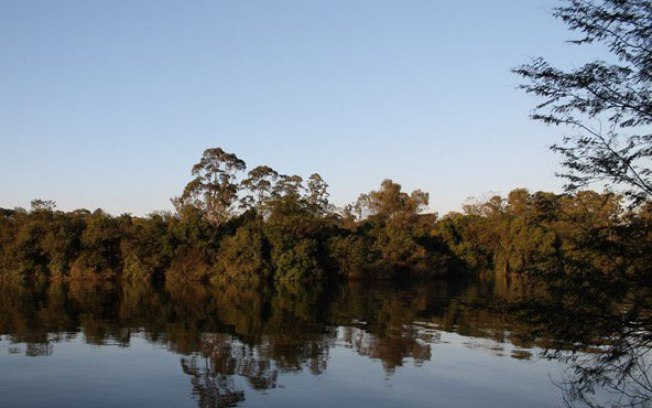

Confirmação ocorreu durante visita da equipe do programa “Prefeitura de bairro em bairro”, que ainda esteve em outros cinco pontos da cidade

Bem equipadas e heterogêneas, as áreas verdes da zona leste paulistana são refúgios para diferentes grupos, de praticantes de ioga a skatistas. A região tem 32 parques públicos, sendo que cinco deles estão entre os dez maiores da cidade.
O site Áreas Verdes das Cidades, que visitou e resenhou com informações, fotos e vídeos mais de 180 áreas verdes urbanas no Brasil e exterior em seus mais de 7 anos de vida, classificou os 5 melhores parques da região leste da cidade de São Paulo.
Apesar de ser um dos principais pontos turísticos de São Paulo, o Ibirapuera não é o maior parque da cidade.
A área verde tem cerca de 15,6 milhões de m² no total, sendo 14,5 milhões m² no Núcleo Engenheiro Goulart, 171 mil m² do Núcleo Vila Jacuí e cerca de 1,5 milhão de m² do Núcleo Ilha do Tamboré (este último foi cedido para a Prefeitura de Barueri administrar em agosto de 2014).
O Parque Linear Eng⁰ Werner Eugênio Zulauf, mais conhecido como Tiquatira, em Cangaíba na Penha, Zona Leste de São Paulo capital. Sua área compreende cerca de 320.000 m², tendo sido inaugurado em 2007. Foi o primeiro parque linear implantado na cidade São Paulo, ao longo do Córrego Tiquatira, possuindo uma extensão de mais de 3 Km.
O Parque Águas, que fica localizado na Cidade Kemel, pertencente a subprefeitura do Itaim Paulista, na zona leste da capital do Estado de São Paulo. O parque, que tem 70.400 m², é formado por áreas remanescentes de três loteamentos e criado para preservar as nascentes do Córrego Três Pontes, afluente do Rio Tietê.
O Parque Ciência, visitado num sábado, fica localizado em Cidade Tiradentes, Zona Leste da cidade de São Paulo, tendo por volta de 178.000 m² de área no total. Foi inaugurado em 22 de janeiro de 2011, tendo custado R$1,9 milhão à Prefeitura de São Paulo.
Parque Linear Consciência Negra, que fica localizado na Cidade Tiradentes, Zona Leste da capital paulista e foi criado para preservar as nascentes do Córrego Itaquera e da mata em estágio de regeneração. Tem cerca de 163.000 m² de área no total, tendo sido inaugurado em 20/11/2009.
O Parque Raul Seixas, visitado num domingo, fica localizado em Itaquera, Zona Leste da cidade de São Paulo. Tem 33.000 m² de área no total, representando a maior área verde junto a COHAB José Bonifácio.
O Parque Sabesp Mooca - Radialista Fiori Gigliotti, que fica localizado onde há - a Torre da Caixa d'Água - o maior reservatório de água da América Latina no Alto da Mooca, Zona Leste da capital paulista.
O Parque Professora Lydia Natalízio Diogo situa-se na Vila Prudente, na Zona Leste de São Paulo capital. Ocupa uma área de 60.000 m², tendo nascido como Parque Ecológico de Vila Prudente em 05/07/1996.
O Parque Belém, que tem o nome oficial de Manoel Pitta, numa terça-feira, que fica localizado na Avenida Celso Garcia, 2431 (veja no mapa), no bairro do Belém, na Zona Leste da Capital e tem 210.400 m² de área.
Parque Benemérito José Brás, que fica no bairro do Brás na zona leste da capital e tem uma superfície de cerca de 27.000 metros quadrados. É um parque criado em 08/01/2011, sendo implantado onde antes havia uma antiga praça, na saída do Metrô, por solicitação da comunidade local, que já utilizava o local para jogar futebol, exercícios de ginástica para idosos e trabalhos com crianças.